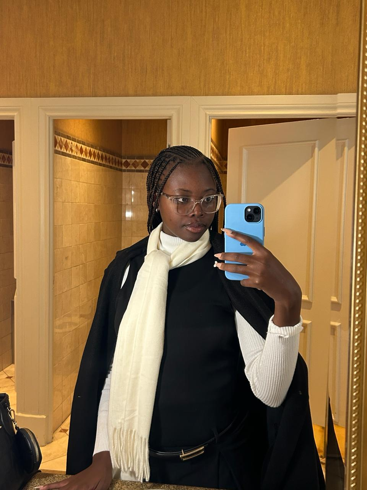

Hi, I'm Charmaine 👋
Aspiring Software Developer
Biotechnology Graduate exploring HealthTech, Bioinformatics & Data Analytics.
View My Work
Hi, I'm Charmaine 👋
Aspiring Software Developer & Biotechnology Graduate
Building digital solutions while exploring the future of HealthTech, Bioinformatics and Data Analytics.

About Me
Hi, I'm Charmaine. I am a Biotechnology graduate from Vaal University of Technology with practical experience in Quality Control and Food Technology gained during my internship at Eskort.
My passion for problem-solving and innovation led me into technology. I am currently studying Web Development through The Web Developer Bootcamp by Colt Steele and participating in the FNB App Academy.
I am interested in Web Development, Software Testing, Data Analytics, HealthTech and Bioinformatics.
Skills
Technical
HTML
CSS
Responsive Design
GitHub
VS Code
Professional
Quality Assurance
Documentation
Problem Solving
Analytical Thinking
Attention to Detail
Learning
JavaScript
Git
Software Testing
Data Analytics
Education & Continuous Learning
National Diploma in Biotechnology
Vaal University of Technology
Relevant areas include Microbiology, Food Microbiology, Biochemistry, Analytical Chemistry and Biotechnology.
The Web Developer Bootcamp
Colt Steele (Udemy)
Currently studying HTML, CSS, JavaScript, Responsive Web Design, Git and GitHub.
FNB App Academy
Participating in technology-focused learning and software development training.
Projects
Kings of Centurion FA Website
A multi-page responsive website developed for a football academy, showcasing training information, registration details, gallery content and contact options.
Get In Touch
I'm currently looking for opportunities in Software Testing, Web Development and Technology-related roles.
📧 matorocharmain@gmail.com
💻 GitHub: CharmaineLM